Attics, Crawlspaces, Drainage & Moisture
Review attic and exterior clues connected to roof coverings, flashing, ventilation, drainage, and water entry.
Read the Attics, Crawlspaces, Drainage & Moisture GuideCrain Bros Inc repairs damaged roofs and restores the residential and commercial property affected beneath them throughout Northeast Arkansas, including Jonesboro, Paragould, Brookland, Bono, Trumann, Harrisburg, Walnut Ridge, Lake City, Bay, Caraway, Monette, Newport, Blytheville, and Gosnell. Our work can begin with a roof leak, hail strike, fallen tree, wind-damaged shingle, failed flashing, ice dam, or fire-damaged roof and continue through emergency protection, permanent roofing repairs, structural repairs, drying, and interior restoration.
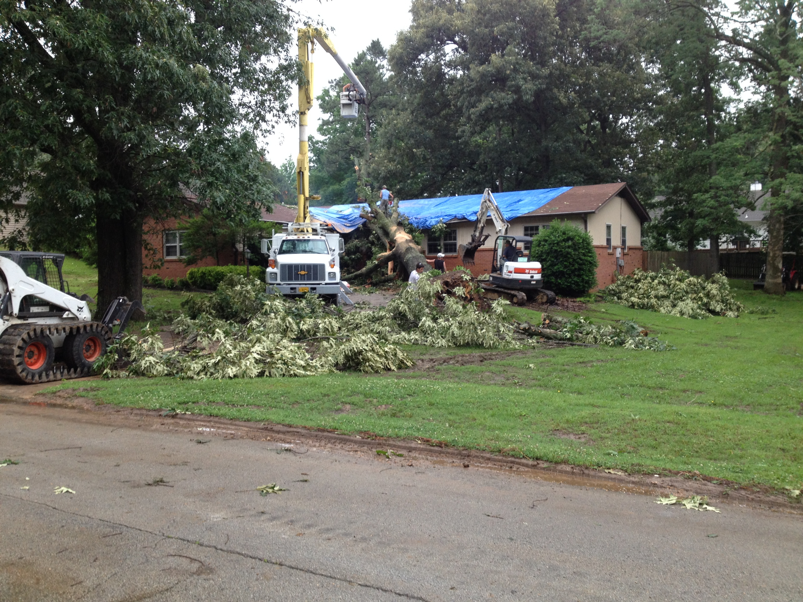
Crain Bros Inc repairs the failed roof assembly and restores the parts of the property damaged by water, wind, impact, hail, fire, or prolonged leakage. A roofing problem can involve shingles or metal panels, but it can also reach flashing, underlayment, decking, rafters, trusses, attic insulation, ceilings, walls, drywall, electrical components, flooring, and personal property. We follow the damage from the exterior opening through the building instead of treating the visible ceiling stain as the entire problem. When roof damage reaches framing, insulation, ceilings, walls, flooring, or other parts of the building, our property restoration services continue the work beyond the roof repair.
Some roofs need one focused repair. Other roofs have damage that reaches too far for a patch to last. We explain what we found, show the property owner where the problem begins, and recommend repair or replacement based on the actual condition of the roof.
Crain Bros Inc installs temporary roof protection when a storm, fallen tree, fire, or other event leaves the building open to rain. Tarping is used to limit additional water entry while unstable materials are addressed, the roof and attic are inspected, and permanent repairs are planned. Because temporary covering can redirect water, the installation has to account for roof slopes, penetrations, drainage paths, damaged edges, and the opening beneath it.
Our emergency response services connect roof protection with immediate property stabilization. If rain has already entered, our water damage restoration services continue with moisture inspection, removal of standing water, structural drying, damaged-material removal, and repairs.
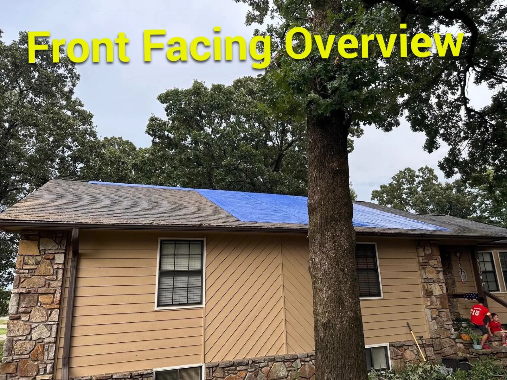
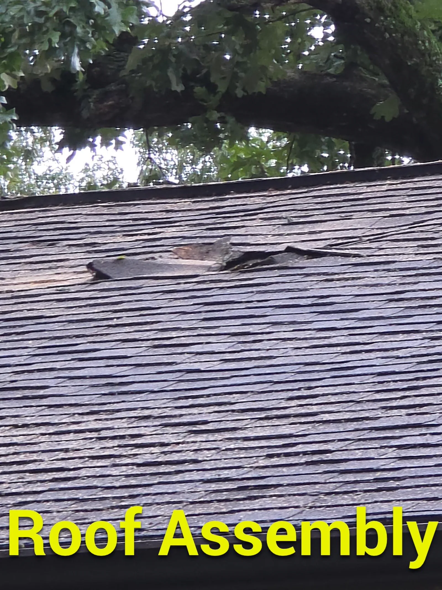
Crain Bros Inc repairs roofs and restores buildings after wind, hail, tornadoes, wind-driven rain, falling limbs, and fallen trees damage the roof system. Wind can lift shingles, loosen metal panels and edge materials, disturb flashing, and push rain beneath a roof covering without leaving a large opening visible from the ground. Hail can affect asphalt shingles, metal roofing, vents, flashing, gutters, and other exposed components during the same storm.
Tree impact can break decking, rafters, trusses, ceilings, insulation, and interior finishes. We document the exterior impact, storm-created openings, water paths, attic conditions, and affected rooms as the work exposes them. Our storm damage restoration services coordinate emergency protection, roof and structural repairs, drying, and reconstruction around the complete property condition.
The FEMA severe-wind property guide describes the roof as a building's first line of defense during high wind. The IBHS Roofing Roadmaps explains how roof coverings, decking, underlayment, edges, and related components work together and how wind and hail performance depends on the complete system.
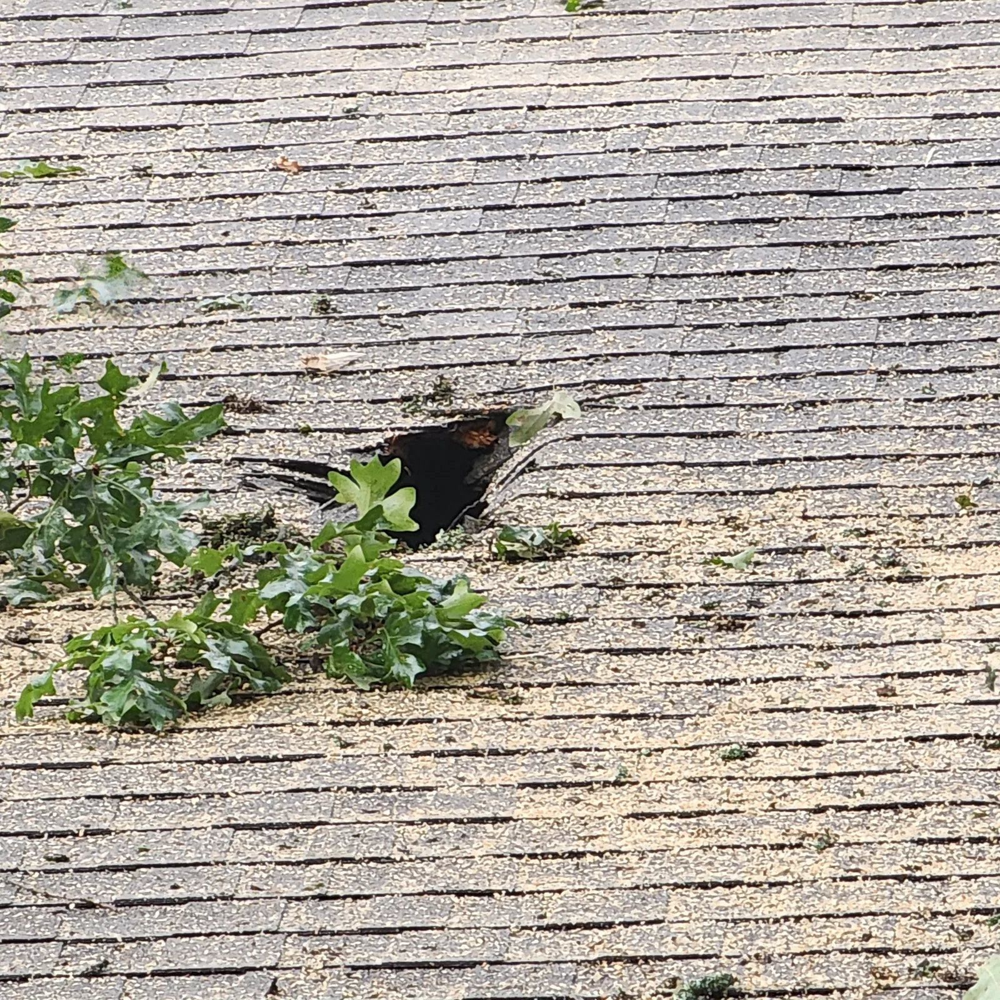
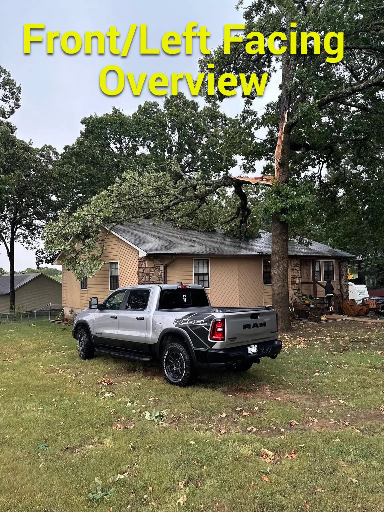
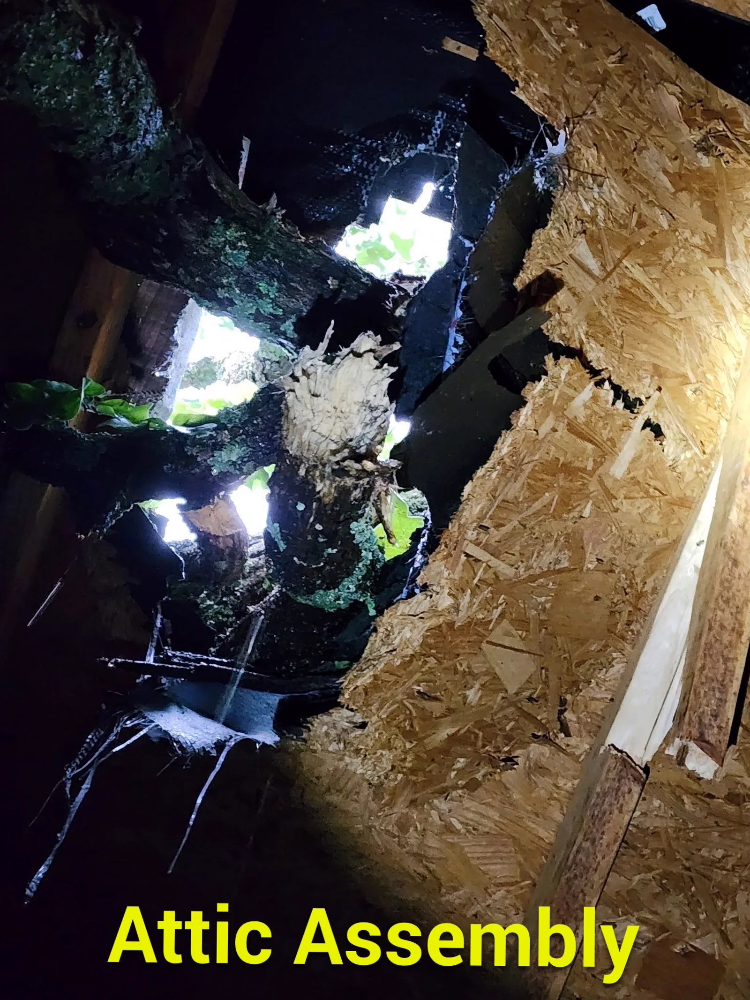
Crain Bros Inc inspects hail-damaged roof surfaces and the exposed metal components that can help show where the storm affected the property. The inspection considers the roofing material, impact locations, vents, flashing, gutters, adjoining elevations, installation condition, and whether the water-shedding function has changed. A dent on a vent does not by itself describe every roof condition, so findings are recorded by component and location.
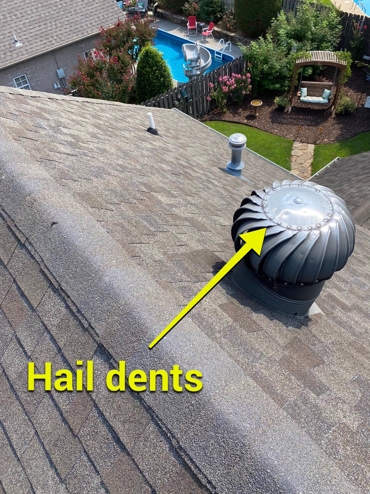
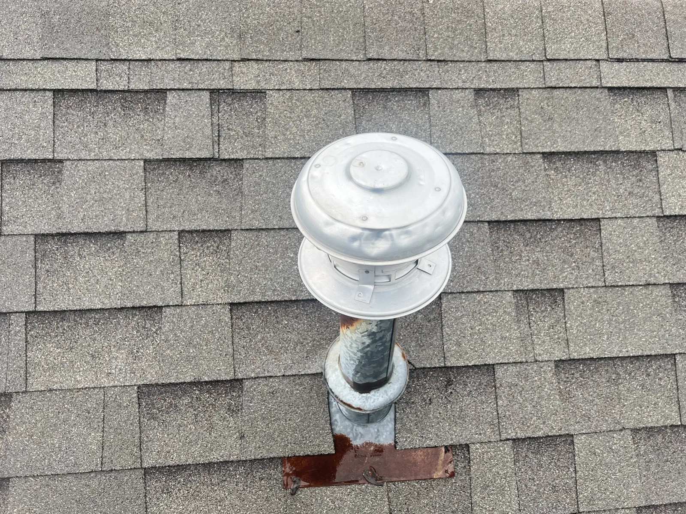
Crain Bros Inc repairs roof leaks by tracing water back to the failed roof detail instead of only coating the place where water appears inside. Chimneys, plumbing vents, exhaust vents, skylights, valleys, sidewalls, headwalls, fasteners, roof-to-wall intersections, and changes in roof slope depend on correctly integrated flashing and overlapping materials. Water can travel along decking, framing, insulation, wiring, and ceiling joints before becoming visible. After the roof entry point is repaired, our water damage restoration services address wet insulation, framing, ceilings, walls, and finishes along the water path.
The U.S. Department of Energy Guide to Durable Attics identifies roof leaks, improperly installed flashing, and ice dams as routes for attic moisture. We document the apparent entry area, wet or deteriorated materials, and the water path discovered during access so the owner has a record of the condition and completed repairs.
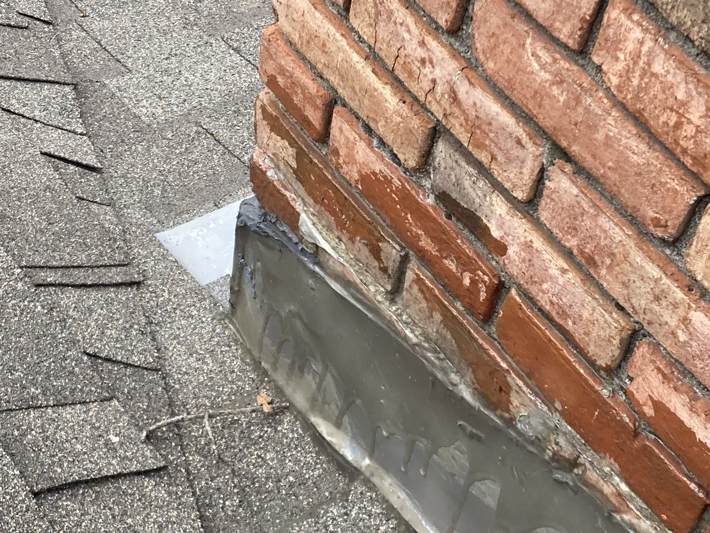
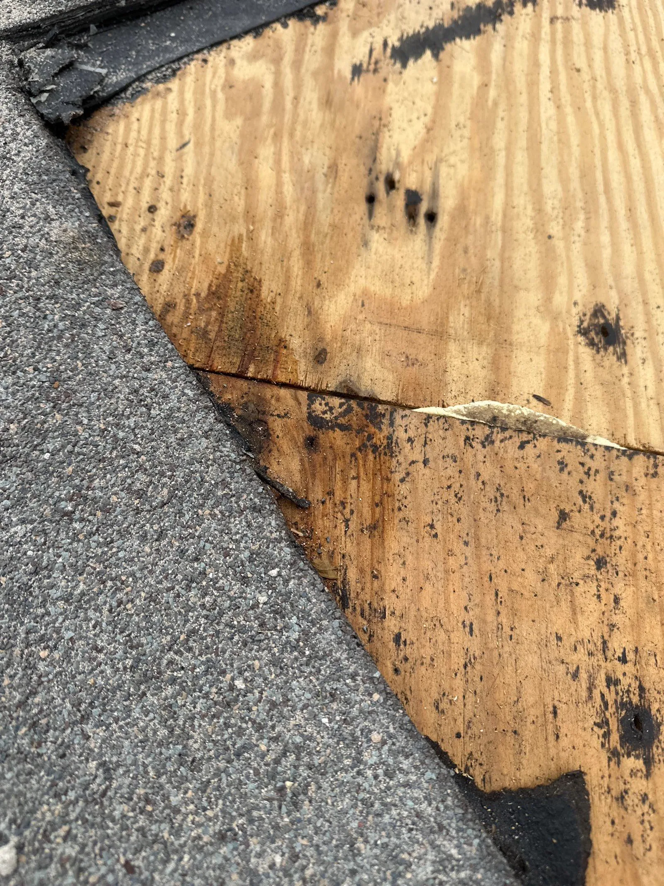
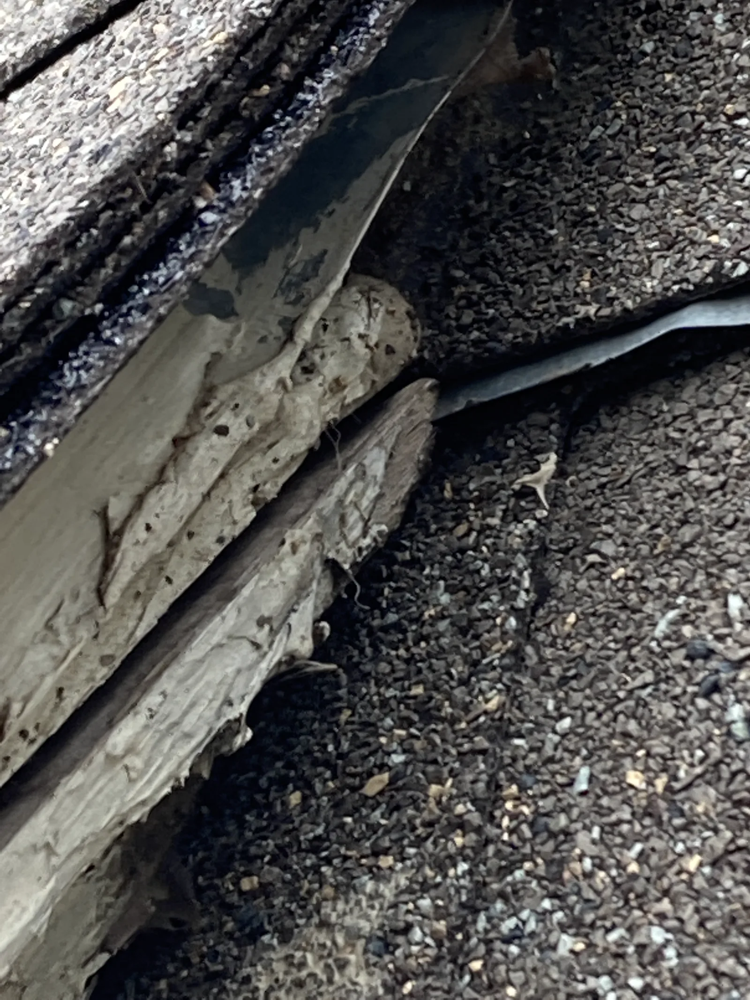
Crain Bros Inc repairs the roofing and flashing around chimneys when failed or incomplete transitions allow water into the roof assembly. The work may involve roofing removal around the chimney, deck inspection, base and counterflashing correction, masonry repairs, underlayment integration, and replacement of the surrounding roof covering. Our masonry services can be coordinated when the chimney itself has deteriorated.
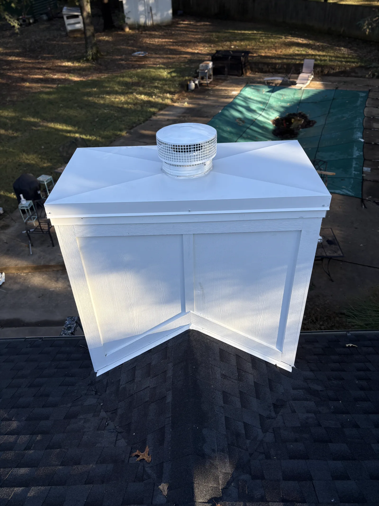
Crain Bros Inc investigates winter roof leaks by considering the roof edge, attic temperature, air leakage, insulation, and ventilation together. An ice dam can hold meltwater above the eave and allow water beneath shingles, where it can reach decking, soffits, fascia, insulation, ceilings, and walls. Wet insulation loses usefulness and can conceal damp framing. If meltwater reaches the attic or rooms below, our water damage restoration services address the affected insulation, framing, ceilings, walls, and finishes after the roof and attic conditions are corrected.
The Department of Energy attic guidance connects ice dams, wet insulation, warped or rotted soffits and fascia, roof leaks, flashing, attic moisture, and ventilation. Our insulation services and building inspection and diagnostics can be coordinated with roofing repairs when the cause crosses more than one building system.
Crain Bros Inc repairs roof decking and structural components when impact, fire, leakage, or deterioration has damaged the support beneath the roof covering. Decking has to provide a sound fastening surface. Rafters, trusses, ridge framing, blocking, connections, and load paths may require inspection when a tree passes through the roof, fire reaches the attic, or long-term leakage softens the assembly.
Openings are documented before damaged materials are removed, and concealed conditions are documented as they become visible. Our framing repair services coordinate structural work with the roofing sequence so repaired support is in place before underlayment and roof covering conceal it.
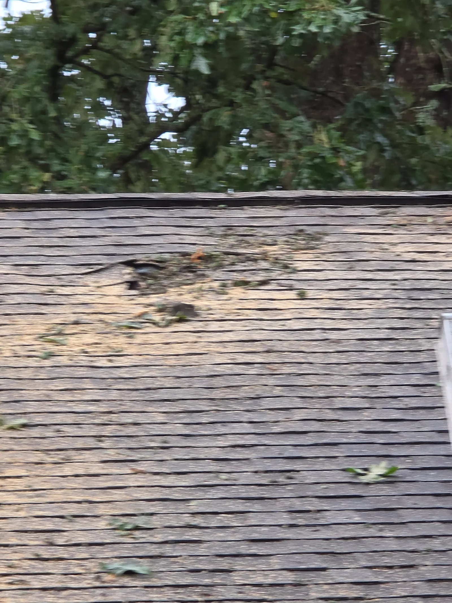
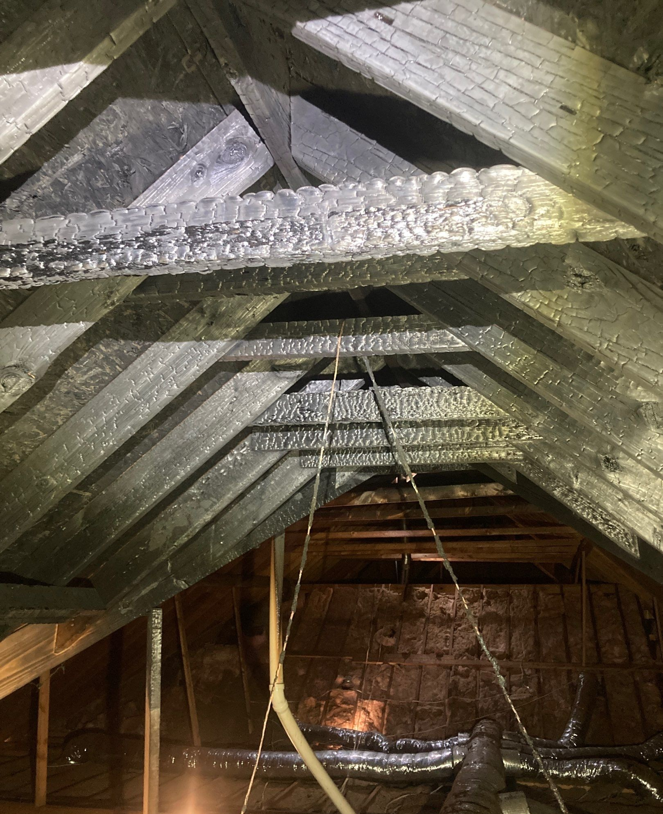
Crain Bros Inc removes fire-damaged roofing, protects the property during tear-off, and reconstructs the roof assembly as part of a coordinated fire damage restoration project. Fire and heat can affect shingles, metal, underlayment, decking, framing, chimney enclosures, insulation, wiring, ventilation, and concealed intersections. The damage has to be exposed carefully enough to understand what remains serviceable.
Before tear-off begins, the work area is planned around lawns, landscaping, driveways, siding, windows, doors, decks, HVAC equipment, occupied areas, material deliveries, and worker travel paths. Ground protection and debris control help keep removed shingles, nails, burned material, and falling debris from creating additional property damage. Existing fire damage, concealed conditions, demolition, repaired framing, and completed reconstruction are documented within the project scope.
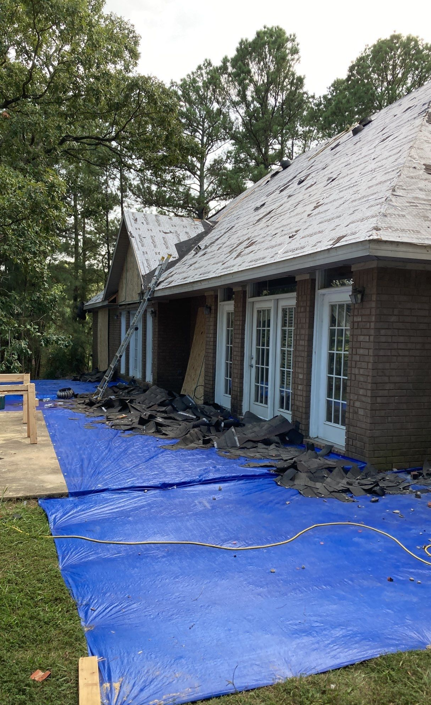
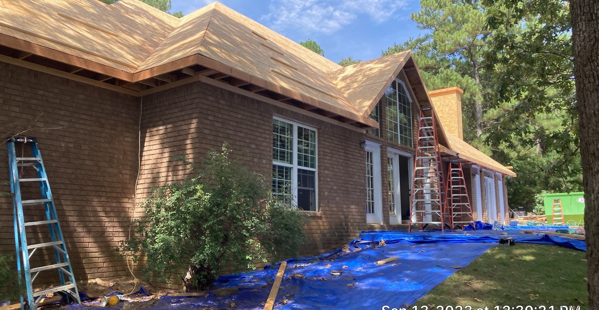
Crain Bros Inc restores attics, insulation, ceilings, walls, drywall, trim, paint, and other building materials after a roof leak allows water to enter. The roof source is corrected first. Moisture inspection then follows the water path so wet materials are dried, removed, or repaired according to their condition instead of being covered prematurely. That coordinated work is provided through our water damage restoration services, which continue from moisture inspection and drying through repairs to damaged interior materials.
A ceiling stain does not always sit directly below the exterior opening. Our property-owner guide, Why Is There a Water Stain on My Ceiling?, explains why timing, weather, plumbing, nearby rooms, and HVAC operation matter during diagnosis. Our drywall repair services, painting services, and broader property damage restoration services complete the interior work after the roof and moisture conditions are corrected.
Crain Bros Inc repairs and installs asphalt shingles, standing-seam metal roofing, and other roof systems according to the property, roof slope, existing assembly, and approved scope. The roof covering is only one layer. A complete assembly can include decking, underlayment, ice-and-water protection, starter materials, fasteners or clips, flashing, drip edge, valleys, ridges, penetrations, ventilation, fascia, soffits, gutters, and adjoining wall transitions.
Architectural asphalt shingles and standing-seam metal roofing require different installation details, but both depend on coordinated edges, penetrations, chimneys, transitions, drainage, and ventilation. Low-slope roofs require system-specific treatment of seams, curbs, penetrations, edges, and drainage rather than details copied from steep-slope roofing.
Crain Bros Inc repairs the exterior components that meet the roof when damage or leakage crosses those boundaries. Fascia supports roof-edge conditions and often carries gutters. Soffits enclose the eave and may provide attic ventilation. Gutters and downspouts move roof runoff away from walls and foundations. Siding and roof-to-wall intersections depend on flashing that sends water onto the exterior surface instead of behind it.
Our gutter work, siding repairs, window and door work, and masonry services can be included when roof damage or reconstruction affects the connected exterior.
Crain Bros Inc installs new roofing as part of additions, remodeling, property improvements, reconstruction, and new construction. An addition can create new slopes, valleys, ridges, drainage paths, wall intersections, overhangs, and structural connections. Those conditions need to be designed with the framing, exterior walls, insulation, flashing, siding, gutters, and finished appearance before the building is closed.
Our general contracting services and remodeling services coordinate the roof with the complete construction sequence. This keeps new roof work connected to the rooms and exterior improvements it is protecting instead of treating the roof as a separate late-stage installation.
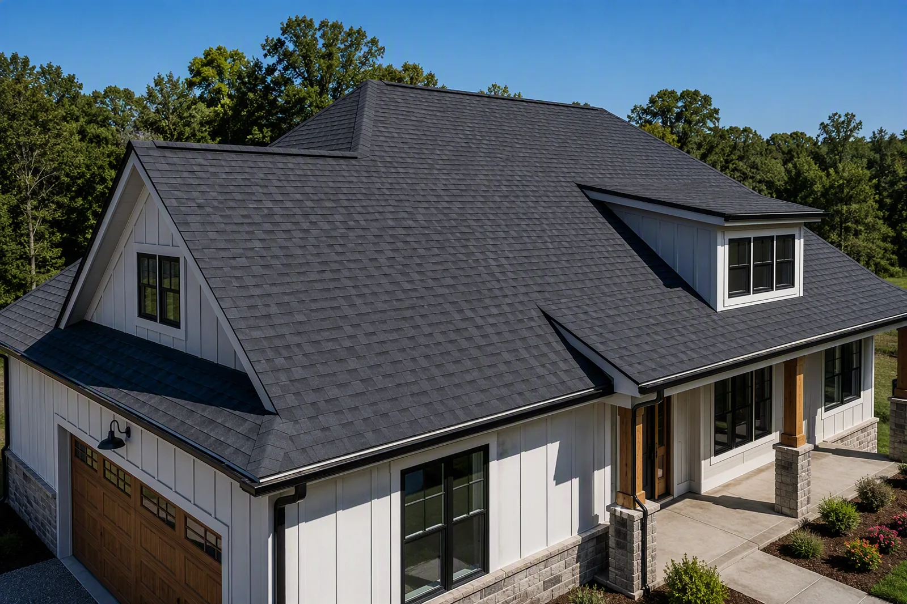
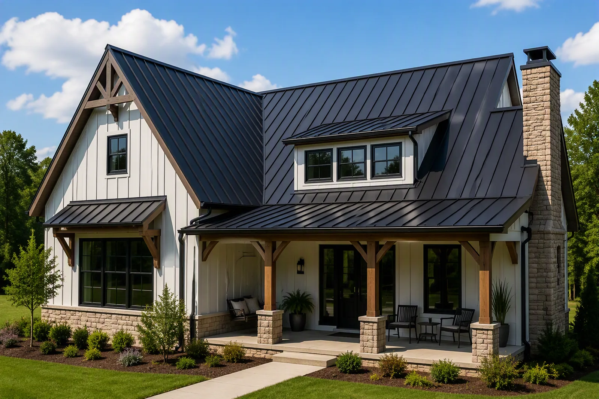
Crain Bros Inc documents visible roof damage and the repair and restoration work included in the approved project scope. Documentation can include storm-created openings, impact locations, water paths, damaged roof and attic materials, concealed conditions discovered during removal, emergency protection, demolition, repairs, drying, reconstruction, and completed property conditions.
Crain Bros Inc works on properties involved in insurance claims as a contractor. Project documentation is provided to the property owner for use on the property owner's own behalf.
Review attic and exterior clues connected to roof coverings, flashing, ventilation, drainage, and water entry.
Read the Attics, Crawlspaces, Drainage & Moisture GuideUse location, timing, weather, plumbing, nearby rooms, and HVAC operation to guide the investigation before repairing the ceiling.
Read the Ceiling Water-Stain GuideProperty owners can review the FEMA guide for protecting property from severe winds for information about roof strengthening and property documentation. The IBHS Roofing Roadmaps explains roof assemblies, coverings, decks, underlayment, edges, fascia, and factors that affect wind and hail performance.
The U.S. Department of Energy Guide to Durable Attics connects roof leaks, failed flashing, ice dams, wet insulation, soffit and fascia deterioration, attic moisture, and ventilation. These resources help owners understand the systems involved, but the repair scope still has to be based on inspection of the actual property.
Temporary weather protection and stabilization for exposed property.
Explore Emergency Response ServicesRoof and property restoration after wind, hail, tornadoes, wind-driven rain, and fallen trees.
Explore Storm Damage Restoration ServicesMoisture inspection, drying, damaged-material removal, repairs, and reconstruction.
Explore Water Damage Restoration ServicesRoof, attic, structural, and interior restoration after fire and suppression water.
Explore Fire Damage Restoration ServicesInvestigation of visible and concealed roof, attic, moisture, and structural conditions.
Explore Building Inspection and Diagnostics ServicesSiding repair and replacement where roofing work reaches exterior walls and roof-to-wall transitions.
Explore Siding ServicesCoordinated exterior and interior repairs through completion.
Explore Property Damage Restoration ServicesCrain Bros Inc can make a focused repair when the failure is isolated and the surrounding roof remains serviceable. Widespread deterioration, incompatible materials, or connected structural damage may require replacement.
Crain Bros Inc can repair the roof source and continue through moisture inspection, drying, insulation, framing, drywall, ceiling, wall, trim, and painting work included in the approved scope.
Crain Bros Inc provides temporary roof protection to limit additional weather entry while inspection and permanent restoration are planned.
Crain Bros Inc repairs the damaged roof assembly and can restore the attic, insulation, structure, ceilings, walls, and other property reached by the damage.
Crain Bros Inc coordinates new roofing with framing, exterior walls, flashing, insulation, siding, gutters, and the larger construction sequence.
Crain Bros Inc documents visible damage and project work as a contractor and provides the documentation to the property owner for use on the property owner's own behalf.
Crain Bros Inc provides roof repairs, replacement, construction, and complete property restoration for residential and commercial properties across Northeast Arkansas.